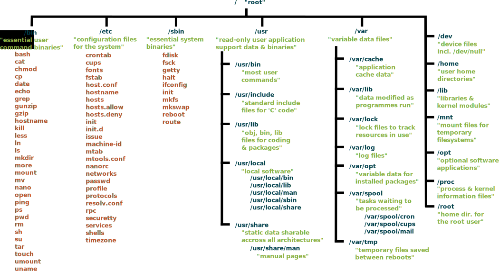

Summary of Basic Commands
Keypoints
| Topic | Summary |
|---|---|
| 1. Introducing the Shell | - A shell is a program whose primary purpose is to read commands and run other programs. - This lesson uses Bash, the default shell in many implementations of Unix. - Programs can be run in Bash by entering commands at the command-line prompt. - The shell’s main advantages are its high action-to-keystroke ratio, its support for automating repetitive tasks, and its capacity to access networked machines. - The shell’s main disadvantages are its primarily textual nature and how cryptic its commands and operation can be. |
| 2. Navigating File and Directories | - The file system is responsible for managing information on the disk. - Information is stored in files, which are stored in directories (folders). - Directories can also store other directories, which then form a directory tree. - pwd prints the user’s current working directory. - ls [path] prints a listing of a specific file or directory; ls on its own lists the current working directory. - cd [path] changes the current working directory.- Most commands take options that begin with a single -.- Directory names in a path are separated with / on Unix, but \ on Windows. - / on its own is the root directory of the whole file system. - - An absolute path specifies a location from the root of the file system. - A relative path specifies a location starting from the current location. - . on its own means ‘the current directory’; .. means ‘the directory above the current one’. |
| 3. Working with FIles and Directories | - cp [old] [new] copies a file. - mkdir [path] creates a new directory. - mv [old] [new] moves (renames) a file or directory. - rm [path] removes (deletes) a file. - * matches zero or more characters in a filename, so *.txt matches all files ending in .txt. - ? matches any single character in a filename, so ?.txt matches a.txt but not any.txt. - Use of the Control key may be described in many ways, including Ctrl-X, Control-X, and ^X. - The shell does not have a trash bin: once something is deleted, it’s really gone. - Most files’ names are something.extension. The extension isn’t required, and doesn’t guarantee anything, but is normally used to indicate the type of data in the file. - Depending on the type of work you do, you may need a more powerful text editor than Nano. |
| 4. Pipes and Filter | - wc counts lines, words, and characters in its inputs. - cat displays the contents of its inputs. - sort sorts its inputs. - head displays the first 10 lines of its input. - tail displays the last 10 lines of its input. - command > [file] redirects a command’s output to a file (overwriting any existing content). - command >> [file] appends a command’s output to a file. - `[first] |
| 5. Loops | - A for loop repeats commands once for every thing in a list. - Every for loop needs a variable to refer to the thing it is currently operating on. - Use $name to expand a variable (i.e., get its value). ${name} can also be used. - Do not use spaces, quotes, or wildcard characters such as * or ? in filenames, as it complicates variable expansion. - Give files consistent names that are easy to match with wildcard patterns to make it easy to select them for looping. - Use the up-arrow key to scroll up through previous commands to edit and repeat them. - Use Ctrl+R to search through the previously entered commands. - Use history to display recent commands, and ![number] to repeat a command by number. |
| 6. Scripts | - Save commands in files (usually called shell scripts) for re-use. - bash [filename] runs the commands saved in a file. - $@ refers to all of a shell script’s command-line arguments. - $1, $2, etc., refer to the first command-line argument, the second command-line argument, etc. - Place variables in quotes if the values might have spaces in them. - Letting users decide what files to process is more flexible and more consistent with built-in Unix commands. |
| 7. Finding Things | - find finds files with specific properties that match patterns. - grep selects lines in files that match patterns. - --help is an option supported by many bash commands, and programs that can be run from within Bash, to display more information on how to use these commands or programs.- man [command] displays the manual page for a given command. - $([command]) inserts a command’s output in place. |
Summary of Basic Commands
| Action | Files | Folders |
|---|---|---|
| Inspect | ls | ls |
| View content | cat | ls |
| Navigate to | cd | |
| Move | mv | mv |
| Copy | cp | cp -r |
| Create | nano | mkdir |
| Delete | rm | rmdir, rm -r |
Filesystem hierarchy
The following is an overview of a standard Unix filesystem. The exact hierarchy depends on the platform. Your file/directory structure may differ slightly:

Glossary
Absolute Path
- A path that refers to a particular location in a file system. Absolute paths are usually written with respect to the file system’s root directory, and begin with either “/” (on Unix) or “\” (on Microsoft Windows). See also: relative path.
argument
- A value given to a function or program when it runs. The term is often used interchangeably (and inconsistently) with parameter.
command shell
- See #shell
command-line-interface
- A user interface based on typing commands, usually at a REPL. See also: graphical-user-interface.
comment
- A remark in a program that is intended to help human readers understand what is going on, but is ignored by the computer. Comments in Python, R, and the Unix shell start with a
#character and run to the end of the line; comments in SQL start with--, and other languages have other conventions.
current working directory
- The directory that relative paths are calculated from; equivalently, the place where files referenced by name only are searched for. Every process has a current working directory. The current working directory is usually referred to using the shorthand notation
.(pronounced “dot”).
file system
- A set of files, directories, and I/O devices (such as keyboards and screens). A file system may be spread across many physical devices, or many file systems may be stored on a single physical device; the operating system manages access.
filename extension
- The portion of a file’s name that comes after the final
“.”character. By convention this identifies the file’s type:.txtmeans “text file”,.pngmeans “Portable Network Graphics file”, and so on. These conventions are not enforced by most operating systems: it is perfectly possible (but confusing!) to name an MP3 sound file homepage.html. Since many applications use filename extensions to identify the MIME type of the file, misnaming files may cause those applications to fail.
filter
- A program that transforms a stream of data. Many Unix command-line tools are written as filters: they read data from standard input, process it, and write the result to standard output.
for loop
- A loop that is executed once for each value in some kind of set, list, or range. See also: while loop.
graphical user interface
- A user interface based on selecting items and actions from a graphical display, usually controlled by using a mouse. See also: command-line interface.
home directory
- The default directory associated with an account on a computer system. By convention, all of a user’s files are stored in or below her home directory.
loop
- A set of instructions to be executed multiple times. Consists of a loop body and (usually) a condition for exiting the loop. See also for loop and while loop.
loop body
- The set of statements or commands that are repeated inside a for loop or while loop.
MIME type
- MIME (Multi-Purpose Internet Mail Extensions) types describe different file types for exchange on the Internet, for example, images, audio, and documents.
operating system
Software that manages interactions between users, hardware, and software processes. Common examples are Linux, macOS, and Windows.
option
- A way to specify an argument or setting to a command-line program. By convention Unix applications use a dash followed by a single letter, such as -v, or two dashes followed by a word, such as
--verbose, while DOS applications use a slash, such as/V. Depending on the application, an option may be followed by a single argument, as in-o /tmp/output.txt.
parameter
- A variable named in a function’s declaration that is used to hold a value passed into the call. The term is often used interchangeably (and inconsistently) with argument.
parent directory
- The directory that “contains” the one in question. Every directory in a file system except the root directory has a parent. A directory’s parent is usually referred to using the shorthand notation
..(pronounced “dot dot”).
path
- A description that specifies the location of a file or directory within a file system. See also: absolute path, relative path.
pipe
- A connection from the output of one program to the input of another. When two or more programs are connected in this way, they are called a “pipeline”.
process
- A running instance of a program, containing code, variable values, open files and network connections, and so on. Processes are the “actors” that the operating system manages; it typically runs each process for a few milliseconds at a time to give the impression that they are executing simultaneously.
prompt
- A character or characters display by a REPL to show that it is waiting for its next command.
quoting
- (in the shell): Using quotation marks of various kinds to prevent the shell from interpreting special characters. For example, to pass the string
*.txtto a program, it is usually necessary to write it as'*.txt'(with single quotes) so that the shell will not try to expand the*wildcard.
REPL
- (read-evaluate-print loop): A command-line interface that reads a command from the user, executes it, prints the result, and waits for another command.
redirect
- To send a command’s output to a file rather than to the screen or another command, or equivalently to read a command’s input from a file.
regular expression
- A pattern that specifies a set of character strings. REs are most often used to find sequences of characters in strings.
relative path
- A path that specifies the location of a file or directory with respect to the current working directory. Any path that does not begin with a separator character (“/” or “\”) is a relative path. See also: absolute path.
root directory
- The top-most directory in a file system. Its name is “/” on Unix (including Linux and macOS) and “\” on Microsoft Windows.
shell
- A command-line interface such as Bash (the Bourne-Again Shell) or the Microsoft Windows DOS shell that allows a user to interact with the operating system.
shell script
- A set of shell commands stored in a file for re-use. A shell script is a program executed by the shell; the name “script” is used for historical reasons.
standard input
- A process’s default input stream. In interactive command-line applications, it is typically connected to the keyboard; in a pipe, it receives data from the standard output of the preceding process.
standard output
- A process’s default output stream. In interactive command-line applications, data sent to standard output is displayed on the screen; in a pipe
|, it is passed to the standard input of the next process.
sub-directory
- A directory contained within another directory.
tab completion
- A feature provided by many interactive systems in which pressing the Tab key triggers automatic completion of the current word or command.
variable
- A name in a program that is associated with a value or a collection of values.
while loop
- A loop that keeps executing as long as some condition is true. See also: for loop.
wildcard
- A character used in pattern matching. In the Unix shell, the wildcard
*matches zero or more characters, so that*.txtmatches all files whose names end in.txt.